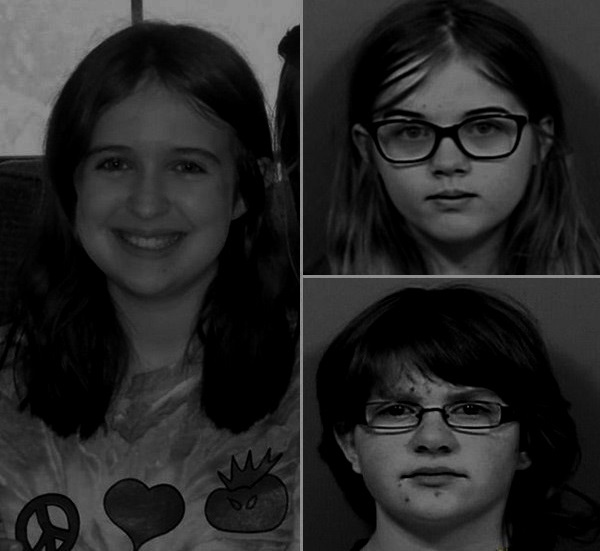

Slayers
Morgan Geyser Anissa Weier
Esquizofrenia precoce Transtorno delirante
12 anos 12 anos
EUA EUA
Na noite do dia 30 de maio de 2014, na cidade de Waukesha, no estado de Wisconsin (EUA), a garotinha Morgan Geyser comemorou seu aniversário de 12 anos com a presença das amigas Anissa Weier e Payton Leutner, ambas também com 12. As duas convidadas passaram a noite na casa.
Na manhã seguinte, as três foram brincar em um bosque. Lá, em meio às árvores, Morgan esfaqueou Payton 19 vezes com uma faca da cozinha de sua casa. Após o ataque, Anissa e Morgan fugiram correndo, abandonando a vítima. Embora Morgan tenha sido a autora das facadas, ela e Anissa arquitetaram o crime juntas, meses antes.
Arrastando-se, Payton conseguiu, milagrosamente, chegar até a beira da estrada, onde foi socorrida por um ciclista, que fazia trilha ali perto. Morgan e Anissa foram detidas algumas horas depois, enquanto caminhavam pela estrada I-94 rumo à floresta de Nicolet (em Wisconsin), onde acreditavam morar o “motivador” de seu crime.
Interrogadas separadamente, ambas disseram à polícia que o crime era uma tentativa de agradar o Slender Man, criatura fictícia que surgiu em um fórum de discussão em 2009 e passou a estrelar games e histórias de terror. O Slender Man, segundo a lenda, persegue e ataca principalmente crianças em lugares como bosques e matas fechadas.
De acordo com a polícia, o objetivo das meninas era subir na hierarquia do mundo de Slender Man, indo, inclusive, morar em sua mansão após o assassinato. Elas também disseram que o Slender Man poderia atacar a família delas caso não matassem a amiga.

Após o depoimento, Anissa foi diagnosticada com transtorno delirante e Morgan com esquizofrenia precoce. Em agosto de 2017, Anissa se declarou culpada de tentativa de homicídio em segundo grau e foi condenada a três anos de tratamento em um hospital psiquiátrico. Em outubro de 2017, com 15 anos de idade, Morgan fez um acordo com a promotoria: ela se declarou culpada de homicídio doloso em primeiro grau e, em troca, os promotores não disputaram a afirmação de que sua condição mental na época a impedia de saber que estava agindo errado. Com isso, Morgan foi condenada a ser internada em um hospital psiquiátrico – o período de internação será determinado em novembro de 2017. A promotoria pede 40 anos, mas, mesmo se isso acontecer, Morgan pode sair antes em uma espécie de liberdade condicional, caso os médicos concordem e um juiz autorize.